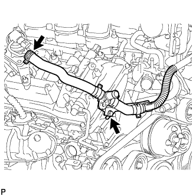
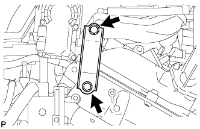
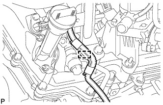
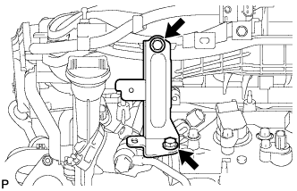
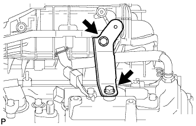
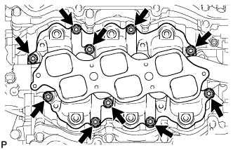

ВПУСКНОЙ КОЛЛЕКТОР > СНЯТИЕ |
| 1. СБРОСЬТЕ ДАВЛЕНИЕ В ТОПЛИВНОЙ СИСТЕМЕ |
Сбросьте давление в топливной системе (Нажмите здесь).
| 2. ОТСОЕДИНИТЕ ПРОВОД ОТ ОТРИЦАТЕЛЬНОГО ВЫВОДА АККУМУЛЯТОРНОЙ БАТАРЕИ |
| 3. СНИМИТЕ НИЖНЮЮ НАКЛАДКУ ПЕРЕДНЕГО БАМПЕРА |
Освободите фиксатор, выверните 5 болтов и снимите нижнюю облицовку переднего бампера.
| 4. СНИМИТЕ ЗАЩИТУ КАРТЕРА ДВИГАТЕЛЯ № 1 В СБОРЕ |
Выверните 4 болта.
 |
Отсоедините защиту картера двигателя от кузова автомобиля, как показано на рисунке.
| 5. СЛЕЙТЕ ОХЛАЖДАЮЩУЮ ЖИДКОСТЬ ДВИГАТЕЛЯ |

| *1 | Пробка расширительного бачка | *2 | Пробка радиатора |
| *3 | Пробка сливного крана радиатора | *4 | Пробка сливного крана блока цилиндров |
Ослабьте пробку сливного крана радиатора.
Снимите пробку радиатора и слейте охлаждающую жидкость.
Ослабьте 2 пробки сливных кранов блока цилиндров и слейте охлаждающую жидкость из двигателя.
| 6. СНИМИТЕ ДЕКОРАТИВНУЮ КРЫШКУ V-ОБРАЗНОГО ДВИГАТЕЛЯ |
 |
Поднимите переднюю часть декоративной крышки V-образного двигателя, чтобы открепить 2 штифта. Затем снимите 2 крюка декоративной крышки V-образного двигателя с кронштейна, чтобы снять декоративную крышку V-образного двигателя.
| *1 | Штифт |
| *2 | Крюк |
| 7. СНИМИТЕ ШЛАНГ ВОЗДУШНОГО ФИЛЬТРА № 1 |
 |
Отсоедините шланг вентиляции картера и вакуумный шланг.
Освободите зажим жгута проводов.
Выверните болт и ослабьте 2 хомута шланга.
Снимите шланг воздушного фильтра №1.
| 8. СНИМИТЕ ВОЗДУШНЫЙ ПАТРУБОК (для моделей со вспомогательной системой подачи воздуха в нейтрализатор) |
|  |
для ряда 1:
Выверните болт и отсоедините воздушный патрубок от комплекта клапана системы снижения токсичности отработавших газов.
 |
для ряда 2:
Выверните 2 болта и отсоедините воздушный патрубок от комплекта клапана системы снижения токсичности отработавших газов № 2.
| 9. СНИМИТЕ РАСШИРИТЕЛЬНЫЙ БАЧОК НА ВПУСКЕ ВОЗДУХА |
 |
Отсоедините разъем корпуса дроссельной заслонки.
Отсоедините перепускной шланг охлаждающей жидкости № 4.
Отсоедините перепускной шланг охлаждающей жидкости № 5.
 |
Отсоедините питающий шланг паров топлива № 1.
Отсоедините разъем электровакуумного клапана № 1.
Отсоедините шланг вентиляции картера № 1.
 |
Отсоедините 2 хомута шланга отопителя.
|  |
Выверните 2 болта и снимите кронштейн корпуса дроссельной заслонки.
|  |
С помощью съемника фиксаторов отсоедините зажим жгута проводов.
|  |
Выверните 2 болта и снимите стойку расширительного бачка № 1.
|  |
Выверните 2 болта и снимите стойку расширительного бачка № 2.
 |
Отверните 2 гайки, выверните 4 болта и снимите расширительный бачок на впуске воздуха
Снимите прокладку.
| 10. СНИМИТЕ ТОПЛИВНУЮ РАМПУ В СБОРЕ |
 |
Отсоедините 6 разъемов топливных форсунок.
Выверните 4 болта и снимите топливную рампу вместе с 6 топливными форсунками.
| 11. СНИМИТЕ ВПУСКНОЙ КОЛЛЕКТОР |
|  |
Отверните 4 гайки, выверните 6 болтов и снимите 2 прокладки.